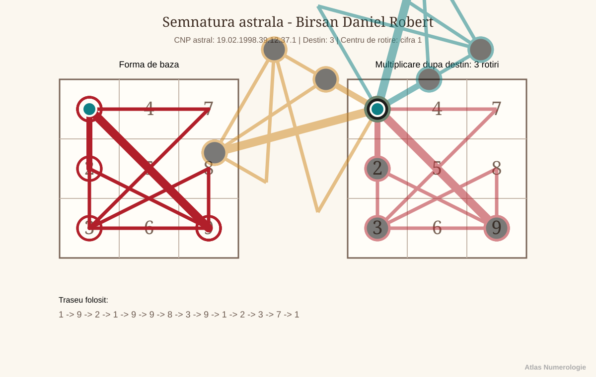

Lucrare numerologica - Birsan Daniel Robert - v1r
Date generale
- Persoana analizata: Birsan Daniel Robert
- Data nasterii: 19.02.1998
- Nume familie: Birsan
- Prenume: Daniel Robert
- Prenume activ folosit in calcul: Daniel
- Versiune lucrare: v1r
- Data lucrarii: 2026-06-29
- Template de lucru: templates/Template_Lucrare_Numerologica_Examen.md
- Tip lucrare: lucrare numerologica de examen
- Stil de redactare: explicativ, conversational-academic
- Nivel de detaliere: amplu
Relatii
- Persoana analizata in relatie: Roman Andreea Maria
- Data nasterii persoana analizata in relatie: 12.01.1998
- Tip relatie analizata: compatibilitate generala / relatie
Capitolul 1. Formule, calcule, tabele, grafice
1.1. Vibratiile fundamentale
Vibratia interioara
Daniel, aici ne uitam la VI, adica vibratia interioara. Ea descrie motorul tau intim: motivatia de baza, instinctul personal, felul in care te simti pe tine cand nu trebuie sa demonstrezi nimic nimanui. Daca ar fi sa folosim o analogie, VI este scanteia din camera interioara: nu se vede mereu din afara, dar ea aprinde decizia, curajul, reactia si directia ta reala.
Pentru tine, VI raspunde la intrebari simple, dar importante: ce ma porneste, ce ma enerveaza, ce imi da curaj, ce vreau sa aleg singur? Inainte sa vorbim despre destin, relatii sau rezultate, aici vedem energia care apasa prima data pe acceleratie.
Pentru vibratia interioara reducem ziua ta de nastere la o singura cifra.
Rezultatul este 1. Arhetipurile acestei vibratii sunt initiatorul, deschizatorul de drum, liderul, pionierul, omul care spune "incep eu". In forma buna, 1-ul nu asteapta sa fie impins de la spate; el porneste, decide, testeaza si isi asuma.
La tine, Daniel, asta inseamna ca in interior exista o nevoie puternica de autonomie. Ai nevoie sa simti ca alegerea iti apartine. Cand energia 1 este folosita matur, te ajuta sa incepi proiecte, sa te ridici repede dupa blocaje si sa iti spui clar punctul de vedere. Cand este tensionata, poate deveni graba, incapatanare, reactie defensiva sau senzatia ca trebuie sa faci totul singur.
Pe scurt, VI 1 iti spune asa: "nu astepta mereu permisiune; invata sa pornesti, dar invata si sa conduci fara sa fortezi".
Vibratia exterioara
Aici ne uitam la VE, adica vibratia exterioara. Daca VI este camera interioara, VE este usa prin care iesi in lume. Ea arata cum te vad ceilalti la primul contact, cum reactionezi in contexte sociale si ce fel de prezenta transmiti cand intri intr-un grup, intr-o conversatie sau intr-o situatie noua.
VE nu spune neaparat tot ce esti, ci forma prin care energia ta devine vizibila. Este ca ambalajul unei carti: nu contine intreaga poveste, dar creeaza prima impresie si ii invita pe ceilalti sa se apropie intr-un anumit fel.
Pentru vibratia exterioara folosim luna nasterii. Luna 2 este deja redusa la o singura cifra.
Rezultatul este 2. Arhetipurile vibratiei 2 sunt mediatorul, partenerul, diplomatul, ascultatorul, omul care simte atmosfera din camera. Daca 1-ul spune "eu pornesc", 2-ul spune "hai sa simtim ritmul potrivit".
In exterior, Daniel, oamenii pot vedea la tine o parte mai sensibila, diplomata si atenta la nuante. Chiar daca in interior ai motor de 1, in afara poti parea mai calm, mai atent, mai dispus sa asculti sau sa negociezi. Aici apare o combinatie interesanta: inauntru exista initiativa, iar in afara apare filtrul relational.
VE 2 te ajuta sa simti oamenii, sa prinzi tensiunile subtile, sa observi cand cineva se inchide sau cand o situatie are nevoie de mai multa rabdare. Partea de echilibrat este sa nu transformi diplomatia in amanare si sa nu iti ascunzi decizia doar ca sa nu deranjezi.
Vibratia globala
Acest punct descrie VG, adica vibratia globala. Ea este sinteza dintre VI si VE: cum se intalneste ce simti in interior cu felul in care apari in exterior. Daca VI este motorul si VE este caroseria, VG este felul in care masina se misca efectiv pe drum.
VG ne arata tonul general al personalitatii, energia care apare cand interiorul si exteriorul incep sa lucreze impreuna. Uneori confirma usor celelalte vibratii, alteori arata exact zona prin care trebuie sa te traduci mai bine.
Pentru vibratia globala adunam vibratia interioara cu vibratia exterioara.
Rezultatul este 3. Arhetipurile vibratiei 3 sunt comunicatorul, povestitorul, creatorul, artistul, omul care pune trairea in cuvinte, forma sau gest. Daca 1 porneste si 2 simte, 3 exprima.
La tine, Daniel, VG 3 arata ca energia ta se echilibreaza prin exprimare. Nu iti ajunge doar sa vrei ceva si nici doar sa simti atmosfera; ai nevoie sa formulezi, sa spui, sa explici, sa creezi o punte prin cuvant sau prin actiune vizibila.
Cand nu comunici, energia se poate strange si ceilalti pot intelege gresit ce se intampla in tine. Cand exprimi constient, 3-ul devine un canal foarte bun: te ajuta sa clarifici, sa destinzi tensiuni, sa transmiti idei si sa faci oamenii sa inteleaga mai usor ce vrei.
Vibratia cosmica variabila
VCV inseamna vibratia cosmica variabila. Ea vine din ultimele doua cifre ale anului de nastere si arata o nuanta mai personala a generatiei tale, o culoare de fundal care se activeaza in felul in care te raportezi la timp, rezultate, maturizare si presiunea de a construi ceva.
Daca VI este motorul personal, iar VE este prezenta sociala, VCV seamana cu vremea in care conduci: nu schimba cine esti, dar influenteaza ritmul, tensiunea, prudenta si felul in care iti gestionezi resursele.
Pentru vibratia cosmica variabila folosim ultimele doua cifre ale anului tau de nastere.
Rezultatul este 8. Arhetipurile vibratiei 8 sunt administratorul, strategul, constructorul de rezultate, omul care invata legea consecintelor, autoritatea matura. 8-ul nu se multumeste doar cu intentii frumoase; el intreaba: ce faci concret, ce organizezi, ce ramane in urma ta?
Prin VCV 8, Daniel, ai o chemare spre organizare, rezultate si raportare matura la responsabilitate. Aceasta energie te poate ajuta sa gestionezi bani, timp, proiecte, limite si decizii importante. Este o vibratie care cere coloana vertebrala: promisiunile trebuie sustinute prin fapte.
In forma tensionata, 8-ul poate aduce presiune, control, frica de esec sau raportare prea dura la reusita. De aceea, pentru tine, lectia nu este doar sa obtii rezultate, ci sa inveti sa le construiesti fara sa te rigidizezi.
Vibratia cosmica totala
VCT inseamna vibratia cosmica totala. Ea vine din anul complet de nastere si descrie amprenta mai larga a contextului in care ai intrat in viata. Nu este doar despre tine ca individ, ci despre fundalul simbolic al anului: ce fel de lectie generala, ce fel de atmosfera si ce fel de chemare mai larga insotesc drumul tau.
Ca analogie, VCT este decorul piesei in care joci rolul personal. VI arata personajul din interior, VE arata cum intra pe scena, VG arata cum se misca, iar VCT arata lumina mare a scenei, atmosfera in care toate acestea se intampla.
Pentru vibratia cosmica totala adunam toate cifrele anului complet.
Rezultatul este 9. Arhetipurile vibratiei 9 sunt inteleptul, vizionarul, ghidul, umanistul, omul care cauta sensul mai mare al experientelor. 9-ul strange multe lectii si incearca sa vada imaginea de ansamblu.
Fundalul anului iti aduce vibratia 9, Daniel. Ea te impinge sa privesti mai larg, sa intelegi sensul experientelor si sa nu ramai blocat in detalii marunte. Poti avea o tendinta naturala de a cauta explicatii, de a lega lucrurile intre ele si de a simti ca viata trebuie sa aiba o directie mai profunda decat simpla rutina.
In forma buna, VCT 9 iti da perspectiva, intuitie larga si capacitatea de a invata din experiente. In forma dificila, poate aduce oboseala, idealism excesiv sau tendinta de a duce prea mult pentru altii. De aceea, aici cheia este discernamantul: sa ajuti fara sa te pierzi si sa cauti sensul fara sa fugi de concret.
1.2. Calea destinului, destinul si puntile
Calea destinului, destinul si puntile formeaza impreuna harta drumului tau de baza. Daca vibratiile fundamentale ne-au aratat cum pornesti din interior, cum apari in exterior si cum se vede energia ta globala, aici mergem mai departe si ne uitam la traseu: incotro se duce energia, prin ce fel de experiente se maturizeaza si ce legaturi trebuie facute intre partile tale.
Imagineaza-ti ca viata este un drum lung. Calea destinului este traseul complet de pe harta, cu toate curbele, intersectiile si zonele prin care treci. Destinul este directia principala in care drumul te conduce. Puntile sunt podurile dintre felul in care simti, felul in care te arati si felul in care ajungi sa te implinesti. Cand puntile sunt constiente, nu mai simti ca o parte din tine trage intr-o directie si alta parte in alta directie.
Calea destinului
Calea destinului este suma tuturor cifrelor din data de nastere inainte de reducerea finala. Ea pastreaza nuantele drumului, nu doar rezultatul redus. Daca destinul final este titlul capitolului, calea destinului este povestea din spatele titlului: cum se formeaza directia, din ce materiale este construita si ce ton are parcursul.
Calea destinului poate fi privita ca traseul complet de pe harta. Arhetipurile ei sunt calatorul, navigatorul, omul care invata din drum si cel care intelege ca destinatia nu se formeaza dintr-un singur pas, ci din toate experientele adunate.
Pentru calea destinului adunam toate cifrele din data ta de nastere si pastram suma completa.
Calea ta este 39. Aici apar doua energii care lucreaza impreuna: 3-ul aduce exprimare, comunicare, creativitate si nevoie de miscare vie, iar 9-ul aduce intelegere larga, sensibilitate fata de oameni, finalizare si capacitatea de a vedea imaginea de ansamblu. Arhetipic, 39 poate fi vazut ca povestitorul matur, comunicatorul care a trait ceva si il poate transforma in sens pentru ceilalti.
Calea 39 iti arata un drum in care exprimarea, oamenii si sensul se combina. Daniel, nu este suficient doar sa stii sau sa simti; ai nevoie sa transmiti mai departe, sa formulezi, sa pui in cuvinte, in idei sau in actiuni ceea ce ai inteles. In viata de zi cu zi, asta se poate vedea cand explici cuiva o situatie complicata pe intelesul lui, cand transformi o experienta grea intr-o lectie utila sau cand simti ca o idee nu este completa pana nu o spui, o scrii, o construiesti sau o impartasesti.
Partea frumoasa a lui 39 este ca poate da voce unei experiente. Partea care cere atentie este riscul de a simti prea multe, de a strange prea mult in interior sau de a amana exprimarea pana cand devine tensiune. Pentru tine, cheia este sa lasi comunicarea sa fie un instrument de eliberare si clarificare, nu doar o reactie dupa ce presiunea s-a acumulat.
Destinul
Destinul arata directia finala de realizare, cifra catre care se reduce calea. Daca 39 este traseul complet, 3 este semnul mare de pe drum: directia prin comunicare, expresie, creativitate, relatie vie cu oamenii si capacitatea de a aduce lumina intr-o situatie prin cuvant, idee, umor, inspiratie sau prezenta.
Destinul poate fi privit ca semnul principal de orientare. Arhetipurile acestei rubrici sunt chemarea, directia, tinta interioara si vocea care intreaba: "prin ce devin eu mai implinit si mai util in lume?"
Pentru destin reducem calea destinului pana ajungem la vibratia de baza.
Rezultatul este 3. Arhetipurile destinului 3 sunt comunicatorul, artistul, povestitorul, creatorul de atmosfera, omul care leaga oamenii prin idei si expresie. Nu inseamna neaparat scena, spectacol sau arta in sens clasic. Poate insemna si sa explici bine, sa vinzi o idee, sa creezi continut, sa coordonezi o discutie, sa aduci claritate intr-o echipa sau sa gasesti formula potrivita atunci cand ceilalti nu stiu cum sa spuna ce simt.
Directia ta de realizare merge prin 3, Daniel: comunicare, exprimare, creativitate si contact viu cu oamenii. Cand iti asumi vocea, ideile si felul tau de a transmite, destinul se misca mai natural. In termeni simpli, viata iti cere sa nu ramai doar in observatie sau analiza, ci sa dai forma lucrurilor: sa formulezi, sa creezi, sa explici, sa pui oamenii in miscare printr-o idee sau printr-o stare.
In varianta echilibrata, 3-ul tau devine bucurie, inteligenta expresiva, flexibilitate si capacitatea de a face lucrurile mai usor de inteles. In varianta tensionata, poate deveni risipire, gluma folosita ca aparare, multe inceputuri fara finalizare sau tendinta de a evita subiectele grele prin schimbarea tonului. De aceea, destinul 3 nu inseamna doar sa vorbesti mai mult, ci sa vorbesti mai clar, mai asumat si mai conectat la ceea ce vrei sa construiesti.
Puntea interior - exterior
Aici comparam ce simti in interior cu felul in care te manifesti in exterior. Puntea ne arata unde curge usor energia si unde ai nevoie sa te traduci mai constient pentru ceilalti.
Imagineaza-ti aceasta punte ca legatura dintre camera interioara si usa prin care iesi in lume. Arhetipurile ei sunt traducatorul, mesagerul si omul care invata sa arate in exterior ceea ce simte in interior, fara sa piarda nici adevarul personal, nici tactul relational.
Pentru puntea interior-exterior calculam diferenta dintre vibratia interioara si vibratia exterioara.
La tine, interiorul vine prin 1, iar exteriorul prin 2: inauntru exista initiativa, autonomie si impuls de decizie, iar in afara se vede mai mult sensibilitatea, diplomatia si atentia la reactie. Imagineaza-ti ca in interior ai un conducator care vrea sa porneasca repede, iar la exterior ai un diplomat care vrea sa simta mai intai terenul. Ambele parti sunt utile. Problema apare doar cand conducatorul se enerveaza ca diplomatul asteapta prea mult sau cand diplomatul ascunde decizia ca sa nu creeze tensiune.
Puntea 1 iti spune ca intre interior si exterior cheia este asumarea. Daniel, cand esti clar cu decizia ta, oamenii te inteleg mai usor. Cand eziti sau astepti prea multe confirmari, apare tensiune intre ce vrei si ce arati. In viata de zi cu zi, asta poate arata asa: stii ce vrei, dar formulezi prea bland; simti ca trebuie sa spui nu, dar amani; ai o directie, dar o prezinti ca intrebare ca sa nu deranjezi.
Arhetipul puntii 1 este initiatorul matur: omul care poate ramane atent la ceilalti, fara sa-si piarda directia. Exercitiul tau este sa spui mai repede si mai simplu ce alegi. Nu brutal, nu rigid, ci limpede. Cand puntea aceasta functioneaza, 1-ul interior nu mai pare presiune, iar 2-ul exterior nu mai pare ezitare; impreuna devin fermitate cu tact.
Puntea interior - destin
Acest punct arata distanta dintre motivatia profunda si directia de destin. Puntea interior-destin vorbeste despre felul in care motorul personal ajunge sa serveasca directia mare a vietii.
Ca analogie, aici vedem drumul dintre scanteie si forma finala. Arhetipurile acestei punti sunt alchimistul, mediatorul interior si constructorul de sens: partea care ia impulsul brut si il aseaza intr-o directie mai clara, mai utila si mai usor de trait.
Pentru puntea interior-destin calculam diferenta dintre vibratia interioara si destin.
La tine vedem trecerea de la 1, adica dorinta de autonomie si initiativa, catre 3, adica destinul comunicarii si al exprimarii. Diferenta dintre ele este 2, iar asta spune ca drumul tau nu se deschide doar prin vointa, ci prin relatie, ritm, rabdare si colaborare.
Cu alte cuvinte, interiorul tau poate spune "vreau sa fac", destinul tau spune "exprima, creeaza, transmite", iar puntea 2 intreaba "cu cine, in ce ton, in ce ritm si cu cata ascultare?". Este o punte foarte importanta pentru ca te invata ca vocea ta devine mai puternica atunci cand nu trece peste oameni, ci ii include.
Intre motivatia ta profunda si destin apare vibratia 2. Asta iti spune, Daniel, ca drumul tau nu se implineste doar prin forta personala, ci si prin rabdare, cooperare, ascultare si relatii construite cu finete. In exemple concrete, 2-ul se vede cand alegi sa asculti inainte sa raspunzi, cand construiesti un parteneriat in loc sa duci totul singur, cand adaptezi mesajul la omul din fata ta sau cand transformi o discutie tensionata intr-o punte reala.
Arhetipul acestei punti este mediatorul creator: omul care poate avea initiativa, dar stie ca mesajul ajunge mai bine cand este asezat in relatie. Pentru tine, Daniel, asta inseamna ca succesul nu vine doar din a avea ideea buna, ci din felul in care o transmiti, o negociezi, o faci inteleasa si o asezi intr-un context in care ceilalti pot raspunde.
1.3. Aspecte de indreptat
Aspectele de indreptat nu sunt defecte si nu trebuie citite ca etichete grele. Ele arata mai degraba locul in care energia ta poate fi educata, rafinata si folosita mai constient. Daca destinul arata drumul, aspectele de indreptat arata pietrele de pe drum: nu ca sa te opresti in ele, ci ca sa inveti cum le treci mai matur.
La tine, Daniel, aceasta rubrica este importanta pentru ca lucreaza cu diferenta dintre potentialul drumului si primul impuls al zilei de nastere. Cu alte cuvinte, ne uitam la felul in care initiativa ta interioara poate deveni uneori prea rapida, prea defensiva sau prea orientata spre control, iar apoi vedem cum poate fi transformata in directie limpede.
Aspecte de indreptat
Aici ne uitam la o zona pe care tu o poti rafina. Nu vorbim despre vina sau defect, Daniel, ci despre un tipar care are nevoie de mai multa constienta. Imagineaza-ti aceasta zona ca pe un muschi: daca il folosesti impulsiv, poate crea tensiune; daca il antrenezi, devine forta, stabilitate si precizie.
Rezultatul acestei rubrici este 37. In el avem 3-ul, care tine de comunicare, expresie, spontaneitate si felul in care dai forma unei idei, si 7-ul, care tine de analiza, profunzime, observatie, introspectie si cautarea unui sens mai adanc. Arhetipic, 37 poate fi vazut ca cercetatorul care trebuie sa invete sa vorbeasca sau ca povestitorul care nu se multumeste cu suprafata lucrurilor.
Pentru aspectele de indreptat pornim de la calea destinului si scadem de doua ori prima cifra din ziua nasterii.
Rezultatul 37 iti arata o tema care se intelege prin experienta, nu doar prin teorie. Pentru tine, observarea reactiilor proprii este foarte importanta: cand te grabesti, cand te aperi, cand vrei sa controlezi si cand poti alege altfel. In viata de zi cu zi, 37 se poate vedea cand simti ceva rapid, dar ai nevoie sa intelegi de ce ai reactionat asa; cand spui o idee, dar apoi iti dai seama ca in spate era o emotie nespusa; sau cand preferi sa rezolvi singur o situatie, desi o discutie clara ar fi simplificat lucrurile.
Partea buna a lui 37 este ca iti poate da minte fina, intuitie, capacitate de analiza si forta de a transforma experienta in intelegere. Partea de lucrat este sa nu te inchizi in capul tau, sa nu supraanalizezi pana se pierde spontaneitatea si sa nu folosesti distanta ca forma de aparare. Aici lectia este sa ramai prezent: sa observi, dar si sa comunici; sa intelegi, dar si sa actionezi; sa ai profunzime, dar fara sa te rupi de oameni.
Solutia aspectelor de indreptat
Solutia arata cheia simplificata a aspectului de indreptat. Daca aspectul arata tensiunea, solutia arata directia de echilibrare. In cazul tau, 37 se reduce la 1, ceea ce inseamna ca iesirea din blocaj vine prin asumare, decizie, initiativa si claritate personala.
Este ca si cum 37 iti pune intrebarea "intelegi ce se intampla in tine?", iar 1 iti spune "bine, acum alege si mergi intr-o directie". Solutia nu este sa fortezi lucrurile, ci sa nu ramai blocat in analiza. Cand simti ca ai intors o problema pe toate partile, 1-ul te cheama sa faci pasul urmator: sa spui ce vrei, sa incepi, sa trasezi o limita sau sa iei o decizie.
Pentru solutie reducem rezultatul obtinut la o singura cifra.
Solutia vine prin 1: Daniel, ai nevoie sa iti asumi decizia si sa nu astepti mereu ca exteriorul sa confirme ce simti deja. Cand alegi limpede, energia se strange si devine directie. Practic, asta poate insemna sa formulezi mai repede o intentie, sa spui "asta aleg", sa incepi un proiect inainte sa ai toate garantiile sau sa iti sustii punctul de vedere fara sa il transformi intr-o lupta.
Arhetipul solutiei 1 este liderul interior: partea din tine care poate lua initiativa fara sa devina rigida. Cand aceasta solutie este folosita matur, 37 nu mai ramane o spirala de ganduri, ci devine intelegere aplicata. Analizezi, intelegi, apoi alegi. Asta este cheia: nu doar profunzime, ci profunzime care se transforma in actiune.
1.4. Structura matriciala
Matricea datei de nastere
Matricea este o harta a cifrelor prezente in codul numerologic personal. Ea arata ce energii sunt repetitive, ce energii lipsesc si unde apar vectori importanti.
Data compacta 19021998 + N1 39 + N2 3 + N3 37 + N4 1 formeaza sirul 19021998393371.
Casutele pline arata resurse usor accesibile. Casutele goale nu inseamna defect, ci zone care se invata prin constienta, relatie, disciplina sau prin influenta numelui.
Casutele matricei
| Casuta | Cifre | Valoare | Descriere | Calcul si interpretare |
|---|---|---|---|---|
| 1 | 111 | 3 | identitatea, vointa, caracterul si modul in care persoana isi afirma prezenta | Casuta este prezenta. Vibratia 1, asociata cu autonomie, vointa, curajul inceputului si nevoia de a lua decizii proprii. Cantitatea 3 arata cat de accesibila este aceasta energie. |
| 2 | 2 | 2 | energia emotionala, empatia, sensibilitatea relationala si vitalitatea subtila | Casuta este prezenta. Vibratia 2, asociata cu sensibilitate, cooperare, diplomatie, rabdare si capacitatea de a crea echilibru intre oameni. Cantitatea 1 arata cat de accesibila este aceasta energie. |
| 3 | 333 | 9 | expresia, comunicarea, talentul, bucuria si felul in care iti pui trairile in forma | Casuta este prezenta. Vibratia 3, asociata cu comunicare, creativitate, bucurie, spontaneitate si talentul de a da forma trairilor prin cuvant sau gest. Cantitatea 3 arata cat de accesibila este aceasta energie. |
| 4 | - | 0 | corpul, disciplina, sanatatea practica, ordinea si stabilitatea concreta | Casuta este absenta. Vibratia 4, asociata cu ordine, stabilitate, disciplina, responsabilitate si capacitatea de a construi pas cu pas. Cantitatea 0 arata cat de accesibila este aceasta energie. |
| 5 | - | 0 | centrul, curajul, libertatea, intuitia practica si capacitatea de adaptare | Casuta este absenta. Vibratia 5, asociata cu miscare, schimbare, curaj, adaptare si nevoia de experienta directa. Cantitatea 0 arata cat de accesibila este aceasta energie. |
| 6 | - | 0 | munca, familia, responsabilitatea, grija si felul in care te implici afectiv | Casuta este absenta. Vibratia 6, asociata cu iubire, grija, familie, responsabilitate afectiva, estetica si dorinta de echilibru. Cantitatea 0 arata cat de accesibila este aceasta energie. |
| 7 | 7 | 7 | spiritualitatea, intuitia, protectia, analiza si legatura cu lumea interioara | Casuta este prezenta. Vibratia 7, asociata cu introspectie, analiza, intuitie, spiritualitate si cautarea unui sens mai adanc. Cantitatea 1 arata cat de accesibila este aceasta energie. |
| 8 | 8 | 8 | socialul, dreptatea, organizarea, puterea si relatia cu resursele | Casuta este prezenta. Vibratia 8, asociata cu organizare, dreptate, rezultate, administrarea resurselor si raportarea matura la autoritate. Cantitatea 1 arata cat de accesibila este aceasta energie. |
| 9 | 9999 | 36 | intelectul, memoria, intelepciunea, sinteza si capacitatea de a intelege experientele | Casuta este prezenta. Vibratia 9, asociata cu intelepciune, compasiune, finalizare, idealuri si capacitatea de a privi imaginea de ansamblu. Cantitatea 4 arata cat de accesibila este aceasta energie. |
Pare si impare
Cifrele pare sunt asociate cu receptivitatea, relatia si constructia prin cooperare. Cifrele impare sunt asociate cu initiativa, expresia si miscarea directa.
Total cifre pare = 2; total cifre impare = 11.
Raportul dintre pare si impare iti arata ritmul dintre a primi si a actiona. Daca apare un dezechilibru, nu il citim ca problema, ci ca indiciu: acolo ai nevoie sa compensezi mai constient.
Vectorii matricei
| Vector | Denumire | Cifre | Valoare | Descriere si interpretare |
|---|---|---|---|---|
| 123 | Energie | 1112333 | 14 | energia de pornire, combustibilul interior si vitalitatea cu care intri in viata. Este vector plin, deci energia ta curge mai coerent aici. |
| 456 | Vointa | - | 0 | vointa practica, corpul de lucru, disciplina si capacitatea de efort sustinut. Este vector incomplet, deci energia cere completare si exercitiu. |
| 789 | Creativitate | 789999 | 51 | creativitatea superioara, viziunea, mintea si directia in care energia se rafineaza. Este vector plin, deci energia curge mai coerent. |
| 147 | Spiritualitate | 1117 | 10 | spiritualitatea aplicata in viata concreta, prin identitate, corp si intuitie. Este vector incomplet, deci energia cere completare si exercitiu. |
| 258 | Social | 28 | 10 | socialul, relationarea, diplomatia si felul in care te asezi intre oameni. Este vector incomplet, deci aici ai nevoie de completare si exercitiu. |
| 369 | Bunastare materiala | 3339999 | 45 | bunastarea materiala, comunicarea, rezultatul vizibil si felul in care ideile devin valoare. Este vector incomplet, deci energia cere completare si exercitiu. |
| 159 | Cariera | 1119999 | 39 | cariera, axa personala si modul in care iti orientezi vointa spre realizare. Este vector incomplet, deci aici ai nevoie de completare si exercitiu. |
| 357 | Scopuri | 3337 | 16 | scopurile, inspiratia, idealurile si felul in care persoana isi urmareste chemarea. Este vector incomplet, deci energia cere completare si exercitiu. |
Tendinte, fixatie si caii-trasura-vizitiul
Aceasta lectura strange dinamica matricei: dominantele, lipsurile si felul in care energia se misca prin vectorii de baza.
Casuta dominanta este 9. Casutele lipsa sunt 4, 5 si 6. Fixatia este pe vectorul 789, cu valoarea 51. Caii au valoarea 14, trasura are valoarea 0, iar vizitiul are valoarea 51.
Dominantele pot fi talente, dar si zone de exces. Lipsurile pot fi compensate prin educatie, prin alegerea mediului potrivit si prin folosirea constienta a numelui. Caii arata energia de pornire, trasura arata suportul practic, iar vizitiul arata directia mentala si spirituala.
1.5. Codul numerologic personal al numelui
Numarul de exprimare
Numarul de exprimare arata cum se aude si se vede numele tau complet in lume. El descrie stilul prin care iti poti exprima potentialul.
Pentru numarul de exprimare adunam valorile numelui complet si reducem rezultatul final.
Prin numarul de exprimare 6, Daniel, numele tau cere caldura, responsabilitate si echilibru. Tu te poti exprima bine cand aduci oamenilor siguranta, frumusete, grija sau sentimentul ca lucrurile sunt asezate. Umbra apare cand iei prea mult asupra ta.
Numarul intim
Numarul intim se calculeaza din vocale si vorbeste despre dorinte profunde, motivatie afectiva si nevoia interioara.
Pentru numarul intim adunam vocalele din nume si reducem totalul.
In interior, prin numarul intim 9, tu cauti sens. Daniel, nu te multumesti doar cu lucruri mici sau rupte de imaginea mare; ai nevoie sa intelegi de ce faci ceva si ce valoare are pentru oameni sau pentru drumul tau.
Numarul de realizare
Numarul de realizare se calculeaza din consoane si arata modul practic prin care persoana actioneaza si produce rezultate.
Pentru numarul de realizare adunam consoanele din nume si reducem totalul.
In plan practic, numarul de realizare 6 iti spune ca rezultatele vin mai bine cand construiesti armonie si incredere. Daniel, ai de invatat sa fii responsabil fara sa devii salvatorul tuturor.
Numarul activ
Numarul activ vine din prenumele folosit si arata energia cu care intri cel mai des in interactiunile cotidiene.
Pentru numarul activ folosim prenumele activ, Daniel, si reducem totalul lui.
Prenumele activ Daniel duce spre 9, deci in interactiunile de zi cu zi poti aduce perspectiva, maturitate si capacitatea de a vedea imaginea mare. Ai grija doar sa nu pari distant atunci cand, de fapt, tu incerci sa intelegi tot tabloul.
Numarul ereditar
Numarul ereditar vine din numele de familie si descrie amprenta de neam, mostenirea subtila si tipul de energie preluata prin linia familiala.
Pentru numarul ereditar folosim numele de familie si reducem totalul lui.
Prin numele de familie apare tot vibratia 9. Daniel, din linia de neam poate veni o tema de intelepciune, finalizare si responsabilitate fata de sens. Important este sa o traiesti personal, nu ca pe o povara preluata automat.
Numarul neamului
Numarul neamului citeste numele de familie printr-o reducere in intervalul 1-22, apropiata simbolic de limbajul arcanelor.
Totalul numelui de familie este 27; reducerea 22 da 5; arcana majora asociata este 5.
Aceasta informatie se citeste ca o tema de fundal. Ea poate functiona ca resursa mostenita, dar si ca responsabilitate de transformat intr-un mod personal si constient.
Cifre intense si influente subtile ale numelui
Cifrele intense arata ce valori apar cel mai des in nume. Primele si ultimele litere arata cum incepe si cum se inchide energia fiecarei componente din nume.
In nume apar urmatoarele frecvente principale: cifra 1 apare de 3 ori, cifra 2 de 3 ori, cifra 3 o data, cifra 4 o data, cifra 5 de 4 ori, cifra 6 o data, iar cifra 9 de 5 ori. Cifra intensa este 9. Primele si ultimele litere sunt: Birsan incepe cu B=2 si se incheie cu N=5; Daniel incepe cu D=4 si se incheie cu L=3; Robert incepe cu R=9 si se incheie cu T=2. Primele vocale sunt I=9, A=1 si O=6.
Aceste elemente nu inlocuiesc numerele principale, dar coloreaza felul in care te prezinti, reactionezi si iti construiesti identitatea prin nume.
1.6. Ciclicitatile
Lectiile de viata
Lectiile de viata sunt citite ca teme recurente. Ele indica ce fel de energie revine in diferite etape, asemenea unor exercitii repetate.
Pentru lectiile de viata inmultim ziua, luna si anul. Din rezultatul obtinut citim sirul lectiilor care revine in diferite etape si iti arata ce energie merita lucrata mai constient.
Acest sir te ajuta sa vezi ce fel de exercitii interioare se reactiveaza pe parcurs: uneori ai de lucrat cu profunzimea si increderea, alteori cu schimbarea, sensul, rabdarea sau constructia concreta. Privit asa, fiecare etapa devine o ocazie de maturizare, nu doar o perioada care trece peste tine.
Ciclul de 9 ani
Ciclul de 9 ani descrie ritmul anilor personali. Fiecare an aduce o tema: inceput, cooperare, expresie, constructie, schimbare, armonie, analiza, putere sau finalizare.
| An | Varsta | An personal | Lectie | Interpretare pe inteles simplu |
|---|---|---|---|---|
| 2026 | 28 | 4 | 2 | Anul cere asezare, ordine si rabdare. Este o perioada buna pentru planuri concrete, dar lectia 2 aminteste ca Daniel nu trebuie sa le faca pe toate singur: cooperarea si ascultarea conteaza mult. |
| 2027 | 29 | 5 | 4 | Energia se misca mai repede si poate aduce schimbari de directie. Lectia 4 cere totusi structura, ca libertatea sa nu devina imprastiere, ci o alegere asumata. |
| 2028 | 30 | 6 | 7 | Accentul cade pe relatii, familie, responsabilitati afective si echilibru. Lectia 7 il invita sa nu raspunda doar din datorie, ci sa inteleaga mai profund ce simte si ce are nevoie. |
| 2029 | 31 | 7 | 5 | Este un an mai interior, potrivit pentru analiza, studiu si selectie. Lectia 5 aduce nevoia de aer proaspat: introspectia ajuta, dar nu trebuie transformata in izolare. |
| 2030 | 32 | 8 | 9 | Apar teme de rezultate, decizie, bani, statut sau responsabilitate. Lectia 9 cere maturitate: ce nu mai are sens trebuie incheiat curat, ca energia sa ramana disponibila pentru etapa urmatoare. |
| 2031 | 33 | 9 | 2 | Se inchide un ciclu si pot aparea bilanturi importante. Lectia 2 cere impacare, cooperare si atentie la relatii, nu doar concluzii trase rational. |
| 2032 | 34 | 1 | 4 | Se deschide o etapa noua, cu mai multa initiativa personala. Lectia 4 il ajuta pe Daniel sa transforme entuziasmul in directie clara, program si consecventa. |
| 2033 | 35 | 2 | 7 | Anul cere tact, rabdare si mai multa finete in relationare. Lectia 7 arata ca unele raspunsuri vin prin liniste, observatie si incredere in propria intuitie. |
| 2034 | 36 | 3 | 5 | Comunicarea devine foarte importanta: discutii, idei, oameni, vizibilitate. Lectia 5 adauga schimbare si flexibilitate, deci Daniel are de ramas deschis fara sa piarda firul principal. |
| 2035 | 37 | 4 | 9 | Revine tema constructiei, dar cu o lectie de finalizare. Este un an in care munca serioasa conteaza, iar unele lucruri trebuie incheiate matur pentru a nu consuma energie inutil. |
| 2036 | 38 | 5 | 2 | Anul aduce miscare, iesire din rutina si nevoia de adaptare. Lectia 2 cere ca schimbarile sa fie discutate, negociate si asezate cu grija fata de oamenii implicati. |
Ciclul de 7 ani si ciclul de 12 ani
Ciclul de 7 ani este legat de maturizare, disciplina si formarea structurii interioare. Ciclul de 12 ani este legat de expansiune, invatare si repozitionare in lume.
Primul ciclu de 7 ani: 0-6. Primul ciclu de 12 ani: 0-11.
Aceste cicluri sunt folosite ca fundal. Ele nu spun exact ce se va intampla, ci arata ce fel de maturizare poate fi activa intr-o etapa.
Pinacluri
Pinaclurile descriu patru etape mari de crestere. Fiecare are o oportunitate si o provocare. Oportunitatea arata ce se poate construi, provocarea arata ce trebuie echilibrat.
| Pinaclu | Interval | Oportunitate | Provocare | Interpretare |
|---|---|---|---|---|
| 1 | 0-33 | 3 | 1 | Oportunitatea se exprima prin comunicare, creativitate, bucurie, spontaneitate si talentul de a da forma trairilor prin cuvant sau gest; provocarea cere lucrul constient cu autonomie, vointa, curajul inceputului si nevoia de a lua decizii proprii. |
| 2 | 34-42 | 1 | 8 | Oportunitatea se exprima prin autonomie, vointa, curajul inceputului si nevoia de a lua decizii proprii; provocarea cere lucrul constient cu organizare, dreptate, rezultate, administrarea resurselor si raportarea matura la autoritate. |
| 3 | 43-51 | 4 | 7 | Oportunitatea se exprima prin ordine, stabilitate, disciplina, responsabilitate si capacitatea de a construi pas cu pas; provocarea cere lucrul constient cu introspectie, analiza, intuitie, spiritualitate si cautarea unui sens mai adanc. |
| 4 | 52+ | 2 | 7 | Oportunitatea se exprima prin sensibilitate, cooperare, diplomatie, rabdare si capacitatea de a crea echilibru intre oameni; provocarea cere lucrul constient cu introspectie, analiza, intuitie, spiritualitate si cautarea unui sens mai adanc. |
Ani importanti interiori si exteriori
Anii interiori marcheaza momente in care poti simti schimbari de directie, decizie sau maturizare. Anii exteriori sunt mai vizibili in planul evenimentelor.
Ani interiori calculati: [2007, 2016, 2025, 2034]. Ani exteriori calculati: [2025, 2034].
Acesti ani se interpreteaza impreuna cu varsta, anul personal si contextul real al persoanei. Ei nu sunt promisiuni de evenimente, ci repere pentru lectura parcursului.
Soarta si destin
Aceasta rubrica compara baza de pornire cu directia de realizare. In calculatorul actual, formula grafica este marcata ca punct de completat, deci este pastrata cu prudenta.
Baza posibila pentru soarta: 1902. Baza posibila pentru destin grafic: 1998.
Pentru o lucrare finala tip examen, acest punct poate fi completat ulterior cu formula validata din documentatia scolii.
1.7. Relatii
1.7.1. Omuletul relatiilor
Omuletul relatiilor compara doua persoane folosind aceeasi sursa de cifre. El arata cine sustine anumite zone, unde exista complementaritate si unde relatia cere atentie.
Pentru aceasta relatie folosim aceeasi sursa pentru ambele persoane: codul numerologic personal construit din data nasterii. Daniel este notat cu albastru, iar Andreea cu roz.

In aceasta relatie, Daniel aduce mai multa forta pe zona de expresie, analiza si sens: 3-ul, 7-ul si 9-ul sunt foarte vizibile la el. Asta inseamna ca poate sustine relatia prin comunicare, idei, perspectiva, intelegere si capacitatea de a privi lucrurile in profunzime.
Andreea aduce mai multa energie pe zona emotionala si relationala: 2-ul este mult mai prezent la ea, iar 4-ul apare ca sprijin practic. Asta poate ajuta relatia sa nu ramana doar in idei, ci sa coboare in rabdare, grija, reactie emotionala si ordine concreta.
Impreuna, cele doua persoane au un foc relational puternic, mai ales prin 1 si 9. Relatia poate avea directie, vointa, intensitate si dorinta de a construi ceva cu sens. Rezultatul comun 4 arata ca directia buna este constructia: reguli clare, stabilitate, proiecte concrete si asumare. Nu este o relatie care se hraneste doar din emotie; are nevoie de forma.
Tema de rezolvat impreuna este 2. Aici cheia este rabdarea, ascultarea si felul in care fiecare il lasa pe celalalt sa isi exprime ritmul. Daniel poate veni mai direct, Andreea poate simti mai mult nuantele; daca aceste doua feluri de a reactiona nu sunt discutate, apar neintelegeri. Cand sunt folosite matur, ele se completeaza: Daniel da directie, Andreea aduce sensibilitate si reglaj relational.
Zonele 5 si 6 sunt foarte slabe in diagrama. Practic, relatia are nevoie sa invete constient libertatea sanatoasa, adaptarea, grija zilnica si responsabilitatea afectiva. Cu alte cuvinte, iubirea nu trebuie lasata doar pe seama intensitatii sau a atractiei, ci are nevoie de obiceiuri mici, prezenta, gesturi constante si discutii clare despre nevoi.
1.8. Spirit
Inclinatii profesionale
Acest punct priveste felul in care energia datei de nastere poate sugera o orientare profesionala. Nu este vorba despre o meserie obligatorie, ci despre un climat interior: ce tip de provocare apare, ce fel de ajutor poate sustine persoana si in ce directie se poate organiza mai bine.
Se lucreaza cu rezultate pastrate in intervalul 1-22. Pentru tine, calculul indica: obstacol 3, ajutor 11, directie 12.
Obstacolul arata zona care poate cere efort sau maturizare; ajutorul arata resursa care poate sustine drumul; directia arata sensul in care energia poate fi orientata. Citirea ramane simbolica si trebuie corelata cu matricea, numele si experienta reala a persoanei.
Inclinatii ezoterice
Inclinatiile ezoterice arata sensibilitatea ta fata de sensuri subtile, simboluri, intuitie, cercetare interioara sau domenii in care cauti mai mult decat explicatia imediata.
Pentru inclinatiile ezoterice citim data compacta prin impartirea la 7 si urmarim codul principal impreuna cu nuanta secundara.
Codul principal 2 te aseaza in zona ezoterismului spiritual. Pentru tine, Daniel, inclinatia nu vine neaparat prin teorii complicate, ci prin felul in care simti oamenii, locurile, atmosfera unei incaperi si miscarile fine dintre oameni. Ai o sensibilitate care poate observa rapid cand un mediu este apasator, cand o persoana are nevoie de sustinere sau cand o relatie nu mai este echilibrata.
Codul secundar 0 duce aceasta deschidere spre filosofie. Asta inseamna ca nu ai nevoie sa fortezi practici spectaculoase, ci sa cauti intelesul din spatele experientelor. Ti se potrivesc activitati care iti clarifica mintea si iti rafineaza intuitia:
- un profil sau un canal de social media construit ca spatiu de observatie: poti urmari tendinte, simboluri, reactii colective, subiecte care revin si felul in care oamenii raspund emotional la ele;
- meditatie simpla, respiratie constienta sau perioade scurte de liniste, ca sa diferentiezi intuitia de reactie emotionala;
- studiul filosofiei, psihologiei, simbolurilor, spiritualitatii si al textelor care explica sensul experientelor umane;
- lucrul cu intrebari profunde, nu doar cu raspunsuri rapide: ce invat din aceasta situatie, ce imi arata relatia aceasta, unde simt dezechilibru si ce pot aseza mai matur;
- activitati de sustinere emotionala, ascultare, consiliere informala sau lucru cu oamenii, atata timp cat pastrezi limite clare si nu preiei starile tuturor.
Directia buna pentru tine este sa iti transformi sensibilitatea in discernamant. Cand simti ceva, nu trebuie sa reactionezi imediat; mai intai observa, noteaza, compara si abia apoi trage concluzia. Asa, intuitia devine instrument de orientare, nu sursa de confuzie.
Codul spiritului si varsta spiritului
Codul spiritului se citeste din ziua si luna nasterii. Pentru tine, Daniel, el arata zona mare de maturizare spirituala si lectia prin care spiritul invata sa isi aseze experienta.
Pentru calcul folosim ziua 19 si luna 2. Cautam ziua pe verticala si luna pe orizontala in tabelul rapid; aceeasi valoare se poate verifica prin formula.
In tabel, pozitia ta este la ziua 19 si luna II, unde apare codul 32.
| Ziua | I | II | III | IV | V | VI | VII | VIII | IX | X | XI | XII |
|---|---|---|---|---|---|---|---|---|---|---|---|---|
| 1 | 52 | 50 | 48 | 46 | 44 | 42 | 40 | 38 | 36 | 34 | 32 | 30 |
| 2 | 51 | 49 | 47 | 45 | 43 | 41 | 39 | 37 | 35 | 33 | 31 | 29 |
| 3 | 50 | 48 | 46 | 44 | 42 | 40 | 38 | 36 | 34 | 32 | 30 | 28 |
| 4 | 49 | 47 | 45 | 43 | 41 | 39 | 37 | 35 | 33 | 31 | 29 | 27 |
| 5 | 48 | 46 | 44 | 42 | 40 | 38 | 36 | 34 | 32 | 30 | 28 | 26 |
| 6 | 47 | 45 | 43 | 41 | 39 | 37 | 35 | 33 | 31 | 29 | 27 | 25 |
| 7 | 46 | 44 | 42 | 40 | 38 | 36 | 34 | 32 | 30 | 28 | 26 | 24 |
| 8 | 45 | 43 | 41 | 39 | 37 | 35 | 33 | 31 | 29 | 27 | 25 | 23 |
| 9 | 44 | 42 | 40 | 38 | 36 | 34 | 32 | 30 | 28 | 26 | 24 | 22 |
| 10 | 43 | 41 | 39 | 37 | 35 | 33 | 31 | 29 | 27 | 25 | 23 | 21 |
| 11 | 42 | 40 | 38 | 36 | 34 | 32 | 30 | 28 | 26 | 24 | 22 | 20 |
| 12 | 41 | 39 | 37 | 35 | 33 | 31 | 29 | 27 | 25 | 23 | 21 | 19 |
| 13 | 40 | 38 | 36 | 34 | 32 | 30 | 28 | 26 | 24 | 22 | 20 | 18 |
| 14 | 39 | 37 | 35 | 33 | 31 | 29 | 27 | 25 | 23 | 21 | 19 | 17 |
| 15 | 38 | 36 | 34 | 32 | 30 | 28 | 26 | 24 | 22 | 20 | 18 | 16 |
| 16 | 37 | 35 | 33 | 31 | 29 | 27 | 25 | 23 | 21 | 19 | 17 | 15 |
| 17 | 36 | 34 | 32 | 30 | 28 | 26 | 24 | 22 | 20 | 18 | 16 | 14 |
| 18 | 35 | 33 | 31 | 29 | 27 | 25 | 23 | 21 | 19 | 17 | 15 | 13 |
| 19 | 34 | 32 | 30 | 28 | 26 | 24 | 22 | 20 | 18 | 16 | 14 | 12 |
| 20 | 33 | 31 | 29 | 27 | 25 | 23 | 21 | 19 | 17 | 15 | 13 | 11 |
| 21 | 32 | 30 | 28 | 26 | 24 | 22 | 20 | 18 | 16 | 14 | 12 | 10 |
| 22 | 31 | 29 | 27 | 25 | 23 | 21 | 19 | 17 | 15 | 13 | 11 | 9 |
| 23 | 30 | 28 | 26 | 24 | 22 | 20 | 18 | 16 | 14 | 12 | 10 | 8 |
| 24 | 29 | 27 | 25 | 23 | 21 | 19 | 17 | 15 | 13 | 11 | 9 | 7 |
| 25 | 28 | 26 | 24 | 22 | 20 | 18 | 16 | 14 | 12 | 10 | 8 | 6 |
| 26 | 27 | 25 | 23 | 21 | 19 | 17 | 15 | 13 | 11 | 9 | 7 | 5 |
| 27 | 26 | 24 | 22 | 20 | 18 | 16 | 14 | 12 | 10 | 8 | 6 | 4 |
| 28 | 25 | 23 | 21 | 19 | 17 | 15 | 13 | 11 | 9 | 7 | 5 | 3 |
| 29 | 24 | 20 | 18 | 16 | 14 | 12 | 10 | 8 | 6 | 4 | 2 | |
| 30 | 23 | 19 | 17 | 15 | 13 | 11 | 9 | 7 | 5 | 3 | 1 | |
| 31 | 22 | 18 | 14 | 10 | 8 | 4 | 0 |
Codul 32 intra in zona Material, adica etapa in care spiritul invata prin constructie, responsabilitate, rezultate, resurse si felul in care energia interioara devine ceva concret in lume.
| Zona | Interval cod | Nivel simbolic | Teme principale |
|---|---|---|---|
| Iubire | 1-13 | 0-2.500 ani | relatii, emotii, atasamente, compasiune, vulnerabilitate |
| Ratiune | 14-26 | 2.500-5.000 ani | logica, discernamant, structura, analiza, minte |
| Material | 27-39 | 5.000-7.500 ani | bani, constructie, putere, manifestare, responsabilitate |
| Haruri | 40-52 | 7.500-10.000 ani | intelepciune, haruri spirituale, ghidare, serviciu, intuitie |
Subetapa se calculeaza din codul spiritului. La codul 32, lectia activa este 6.
Matricea lectiilor arata cum sunt organizate cele treisprezece subetape ale Codului Spiritului. Ele sunt impartite in patru etape mari: intelegere si stabilizare, experimentare si manifestare, finalizare si orientare catre ceilalti, apoi examenul de integrare.
| Etapa | Descriere etapa | Subetapa | Lectie | Descriere subetapa |
|---|---|---|---|---|
| 1 | Intelegere si stabilizare | 1 | Inceput de cale | Inteleg cine sunt si ce am de facut pe pamant. |
| 2 | Interactiune | Inteleg cine sunt si ce am de facut in raport cu alte persoane. | ||
| 3 | Cautarea echilibrului | Inteleg echilibrul dintre centru si margini, dintre apropiere si miscare. | ||
| 4 | Stabilitate | Stabilizez tot ce am inteles pana acum. | ||
| 2 | Experimentare si manifestare | 5 | Schimbare | Experimentez si invat ce a ramas de lucrat, dar altfel decat pana acum. |
| 6 | Prelucrarea karmei | Balancez, prelucrez ce am acumulat si creez teren stabil pentru o noua etapa. | ||
| 7 | Depasirea obstacolelor | Sunt pregatit pentru experiente mai intense si invat sa nu fug de ele. | ||
| 8 | Succesul | Culeg roadele a ceea ce am invatat si ma manifest responsabil. | ||
| 3 | Finalizare si orientare catre ceilalti | 9 | Finalizarea | Inchei ce tine de mine, ca sa pot privi dincolo de mine. |
| 10 | Norocul | Invat sa primesc, sa colaborez si sa las viata sa ma aseze in contexte potrivite. | ||
| 11 | Slujirea | Ii slujesc pe altii prin experienta si maturitatea acumulata. | ||
| 12 | Sacrificiul | Invat diferenta dintre daruire constienta si pierdere de sine. | ||
| 4 | Examen | 13 | Examenul | Integrez lectia si trec spre un nivel nou de intelegere. |
Pentru tine, Daniel, subetapa 6 se numeste Prelucrarea karmei. Asta inseamna ca tema centrala nu este sa fugi de responsabilitati, ci sa le asezi corect: ce iti apartine, ce ai preluat de la familie, ce duci pentru altii si unde trebuie sa creezi un teren mai stabil pentru urmatoarea etapa. Este o lectie de echilibrare, rafinare si maturizare prin lucruri concrete.
Varsta spiritului arata simbolic experienta acumulata pana la nastere si apoi experienta actualizata cu varsta biologica.
Ghidarea practica este simpla: cand apare presiune materiala, profesionala, familiala sau relationala, nu o trata ca pe o piedica, ci ca pe locul in care ai ceva de ordonat. Pentru codul 32, progresul vine cand transformi haosul in structura, emotiile in decizii mature si responsabilitatile in alegeri asumate.
1.9. Ajutoare
Triunghiul financiar
Triunghiul financiar combina ziua, luna, anul redus si destinul redus pentru a observa raportarea la resurse, constructie si directie materiala.
Baza triunghiului este [1, 2, 9, 3]; destinul din triunghi este 3.
Se citeste ca instrument complementar. El arata cum poate persoana sa isi organizeze energia pentru rezultate, nu daca va avea sau nu succes financiar in mod garantat.
Patratul de aur
Patratul de aur aseaza valori succesive pornind de la ziua nasterii si creeaza o schema de echilibru numeric.
Valoarea centrala este 23; suma de control este 69.
Centrul se citeste ca ax al structurii. Patratul poate fi folosit ca instrument de sinteza si sustinere simbolica, impreuna cu restul hartii.
Capitolul 2. Caracterul
2.1. Vibratia interioara
Daniel, caracterul tau profund se vede mai intai prin vibratia interioara. Aici ne uitam la ce te misca din interior inainte ca lumea sa vada rezultatul.
Ziua nasterii este 19; reducerea duce la 1.
In caracterul tau, 1-ul arata initiativa si nevoie de autonomie. Daniel, cand iti folosesti vointa cu luciditate, poti deschide drumuri. Cand o folosesti defensiv, poti intra in tensiune cu cei care nu tin ritmul tau.
2.2. Liniile de tensiune si puntile
Tensiunile nu sunt defecte. Ele sunt diferente intre doua planuri ale persoanei: ce simte, ce arata si incotro merge.
Punte interior-exterior: |1 - 2| = 1. Punte interior-destin: |1 - 3| = 2.
Cand o punte are valoare mica, integrarea iti este mai usoara. Cand diferenta este mai mare, poti simti ca trebuie sa traduci mai mult intre interior, exterior si destin.
2.3. Caracterul prin nume
Numele completeaza caracterul nativ. Uneori numele sustine direct ceea ce arata data; alteori aduce o energie diferita, care largeste paleta persoanei.
Numar de exprimare = 6; numar intim = 9; numar de realizare = 6.
Caracterul final nu este dat de o singura cifra. El se formeaza din dialogul dintre data nasterii, nume, experiente si alegeri constiente.
Capitolul 3. Transformarea
3.1. Vibratia exterioara
Transformarea ta se vede in felul in care inveti sa te manifesti in lume. Vibratia exterioara arata cum te intalnesti cu ceilalti si cum iti reglezi prezenta.
Luna nasterii este 2; reducerea duce la 2.
Pentru tine, transformarea exterioara trece prin 2: mai multa ascultare, mai multa diplomatie si o relatie mai buna cu ritmul celorlalti. Daniel, nu inseamna sa renunti la vointa ta, ci sa inveti sa o exprimi fara sa rupi legatura.
3.2. Aspecte de indreptat
Aici privim zona care cere corectare. Este un punct de maturizare, nu o condamnare.
Pentru aspectele de indreptat pornim de la rezultatul 37, apoi reducem solutia la o singura cifra.
Solutia prin 1 arata ca echilibrarea se face prin autonomie, vointa, curajul inceputului si nevoia de a lua decizii proprii. Cu alte cuvinte, persoana nu trebuie sa se lupte cu tema, ci sa invete sa o conduca altfel.
3.3. Transformarea prin cicluri
Ciclurile arata cand anumite lectii devin mai vizibile. Ele dau ritm transformarii.
Se folosesc anii personali, pinaclurile, lectiile de viata si anii importanti calculati in capitolul 1.
O transformare reala apare cand persoana intelege tema perioadei si coopereaza cu ea, in loc sa o traiasca automat.
Capitolul 4. Destinul
4.1. Vibratia destinului
Destinul este directia majora de realizare. El nu spune ca viata are un singur scenariu, ci arata ce fel de energie cere implinire.
Calea destinului este 39; reducerea ei duce la 3.
Destinul tau, Daniel, cere exprimare. Ai nevoie sa iti folosesti vocea, ideile, creativitatea si capacitatea de a pune trairile in forma. Cand taci prea mult sau iti minimalizezi expresia, drumul se simte mai stramt.
4.2. Calea destinului
Calea destinului pastreaza traseul detaliat, in timp ce destinul redus arata esenta.
Pentru calea destinului adunam toate cifrele datei tale de nastere.
Numarul 39 arata drumul concret, iar 3 arata vibratia finala. In lectura practica, ambele sunt importante: traseul explica nuanta, rezultatul explica directia.
4.3. Destin si nume
Comparatia dintre destin si numele complet arata daca expresia sociala sustine direct traseul nativ sau il provoaca sa se rafineze.
Destin = 3; numar de exprimare = 6.
Cand cele doua rezultate sunt diferite, nu inseamna contradictie. Inseamna ca ai de invatat sa iti manifesti destinul printr-un stil propriu, modelat de nume si de experienta.
Capitolul 5. Parcursul vietii
5.1. Etapele mari
Parcursul vietii este citit prin mai multe straturi: cicluri, pinacluri, ani personali si lectii.
Vezi capitolul 1.6 pentru calculele detaliate.
Aceste repere ajuta la intelegerea momentelor de schimbare, dar nu trebuie folosite fatalist. Ele indica teme, nu impun evenimente.
5.2. Urmatorii ani personali
| An | Varsta | Vibratie | Interpretare conversationala |
|---|---|---|---|
| 2026 | 28 | 4 | Daniel intra intr-o etapa in care lucrurile trebuie puse in ordine. E un an bun pentru munca serioasa, stabilizare si decizii practice, fara graba inutila. |
| 2027 | 29 | 5 | Anul aduce miscare si dorinta de schimbare. Poate fi o perioada buna pentru experiente noi, cu conditia sa nu fie abandonate lucrurile importante doar din impuls. |
| 2028 | 30 | 6 | Tema principala devine echilibrul in relatii si responsabilitatile personale. Daniel are de invatat sa fie prezent pentru ceilalti fara sa ia totul asupra lui. |
| 2029 | 31 | 7 | Ritmul se intoarce spre interior. Este un an potrivit pentru analiza, studiu, liniste si alegeri mai selective, mai ales daca apare nevoia de sens. |
| 2030 | 32 | 8 | Energia se duce spre rezultate, autoritate si organizarea resurselor. Anul cere decizii mature si o relatie mai clara cu banii, munca si responsabilitatea. |
Capitolul 6. Ajutoare
6.1. Semnatura astrala
Semnatura astrala iti arata traseul principal intr-o forma vizuala. La tine, Daniel, pornirea este in cifra 1, ceea ce vorbeste despre initiativa, identitate si nevoia de a-ti asuma directia. Traseul se intoarce des prin 9 si 3, deci ai o semnatura care cere sa transformi experienta acumulata in exprimare, comunicare si creatie concreta.
Pentru acest ajutor folosim CNP-ul astral si destinul. CNP-ul astral da traseul, iar destinul arata de cate ori se multiplica forma.
Destin: 3

Interpretarea este simpla: nu esti construit sa mergi doar pe acumulare tacuta. Cand ramai blocat in analiza sau in asteptarea momentului perfect, semnatura te impinge inapoi spre actiune si exprimare. Cifra 1 iti cere sa pornesti, 9 iti cere sa vezi imaginea larga, iar 3 iti cere sa dai forma prin cuvant, proiect, prezenta si comunicare.
6.2. Triunghiul financiar
Triunghiul financiar arata cum se organizeaza relatia ta cu resursele, munca si directia materiala. La tine apare sirul 1-2-9-3: initiativa, sensibilitate relationala, viziune larga si exprimare. Cu alte cuvinte, banii si rezultatele se aseaza mai bine cand nu lucrezi doar mecanic, ci cand pui o idee personala intr-o forma clara pentru ceilalti.
2 -> 2
1998 -> 9
1 + 2 + 9 = 12 -> 3

Pentru tine, Daniel, cheia nu este sa fortezi rezultatul, ci sa legi initiativa de cooperare. Cifra 1 porneste, cifra 2 calibreaza relatia cu oamenii, cifra 9 iti da imaginea mare, iar cifra 3 te ajuta sa vinzi, sa explici, sa creezi sau sa comunici valoarea. Cand una dintre aceste parti lipseste, apar amanarea, risipirea sau sentimentul ca muncesti fara directie.
6.3. Patratul de aur
Patratul de aur aseaza ziua de nastere intr-o matrice de echilibru. Pentru tine pornim de la ziua 19 si completam patratul dupa ordinea 4-9-2-3-5-7-8-1-6. Centrul este 23, iar suma de control este 69.
Centru: 23
23 x 3 = 69

Patratul tau arata ca stabilitatea se construieste prin organizare, dar nu intr-un mod rigid. Centrul 23 cere miscare, adaptare si comunicare, iar suma 69 aduce o tema de responsabilitate fata de ceea ce creezi. Cand iti ordonezi timpul si iti alegi clar prioritatile, partea creativa a lui 3 devine mult mai usor de folosit.
Capitolul 7. Concluzii finale pentru numerologi
7.1. Concluzie finala
Concluzia finala strange rezultatele mari si le aseaza intr-o lectura coerenta.
VI=1; VE=2; VG=3; Calea destinului=39; Destin=3; Numar de exprimare=6.
Daniel, harta ta pune in dialog energia interioara 1, manifestarea exterioara 2 si destinul 3. Cu alte cuvinte: ai initiativa, ai sensibilitate relationala si ai nevoie sa exprimi. Forta ta cere maturitate, zonele lipsa cer educare, iar repetitiile pot deveni maiestrie daca le lucrezi constient.
7.2. Directii de dezvoltare
Directiile de dezvoltare transforma analiza in practica. Pentru tine, lucrarea devine utila atunci cand pleci din ea cu intrebari clare si pasi concreti.
Se folosesc vibratiile dominante, casutele lipsa, puntile si ciclurile active.
Recomandarea pentru tine este sa observi cand folosesti energia in lumina si cand o duci in exces. Numerologia devine utila abia atunci cand o folosesti ca limbaj de autoeducare, nu ca lista de etichete.
Capitolul 8. Sfatul numerologului
Daniel, sfatul central este sa nu tratezi cifrele ca pe limite, ci ca pe repere. Vibratia interioara 1 iti arata cum se aprinde energia personala, vibratia exterioara 2 iti arata cum se vede aceasta energie in lume, iar destinul 3 iti arata directia de implinire. Daca le traiesti constient, transformi predispozitiile in alegeri mature. Daca le traiesti automat, aceleasi energii pot deveni tensiuni. Cheia este observarea, disciplina blanda si folosirea constienta a resurselor tale.